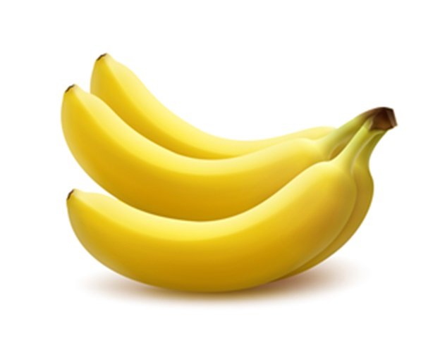

香蕉
台灣香蕉主要生長地
南投：中寮、國姓、集集、水里，雲林：古坑，嘉義：竹崎、中埔、梅山、番路，高雄：旗山、美濃、內門，屏東：萬巒、高樹、內埔、里港、鹽埔、新埤、長治，花蓮：壽豐

香蕉好處有哪些？
1.改善便祕、幫助增加飽足感、調整體態
吃香蕉的好處第一個就是潤腸通便，這效果源自於內含大量膳食纖維與果膠，能夠提升飽足感，減少熱量攝取，而膳食纖維可促進腸胃蠕動、幫助排便，所以也有助於改善代謝不佳、促進腸道健康[3]。
2.調解血壓、促進心血管健康
香蕉屬於「高鉀低鈉」的水果，能夠維持體內電解質平衡、調節血壓上升的速度，有益於心血管保健，以及預防高血壓[3]。
3.預防抽筋
香蕉成分裡豐富的鉀、鈣、鎂離子，有助於改善體內電解質不平衡，以及預防因電解質失衡而引起的抽筋，所以許多人運動前也會吃1根香蕉補充體力又能預防抽筋。
4.抗氧化、提升免疫力
香蕉也含有大量維生素C、E等天然抗氧化物質，能夠提升人體免疫力、抵禦外來病菌，並且香蕉屬於「低微生物餐[4]」（食物中微生物減到最低的狀態）的水果，若體內白血球過低香蕉可去皮後食用，適合抵抗力不足的人補充[3]。
5.提升血清素，抵抗憂鬱
香蕉裡面含有色胺酸、維生素B6，可幫助大腦合成血清素，使心情更穩定、愉悅，並改善憂鬱情緒，因此香蕉又稱為「快樂水果」[5]。
香蕉樹的生長過程
香蕉其實是多年生植物，也就是可以生長很多年、重複開花結果的植物，一生可以收成三到四次。香蕉的生命週期主要可以分成兩個階段「發育階段」及「繁殖階段」。「發育階段」即是成長時期，這是開花之前的準備階段。開花之後邁入「繁殖階段」。香蕉的核心，也就是香蕉真正的莖部名為球莖，形狀像電燈炮，相對於長得像樹幹的假莖，球莖是埋在土壤底下。簡單地說，球莖會長出假莖，假莖再長出葉子和花。香蕉跟大多數植物一樣也有根部，地底下的維管束最深可達二十呎，不是很深，不過仍可輸送水分和養分。
整個過程大致就是：一個球莖生出另一個球莖，幾個球莖即可成為一片蕉園。其繁殖過程是經由形似枝幹的附屬體完成的，這個附屬體就是球莖萌發出的吸芽。種植香蕉絕對少不了吸芽，一般球莖可以長出十二株吸芽，水平冒出周圍土壤。最後，新的球莖鑽土而出，有時離原球莖多達五呎，有時甚至直接從原球莖冒出來。成熟的香蕉樹底下會漸漸出現幼株，兩株的外型和基因都一模一樣，常被視為母株和子株。最後子株會長得比母株還高還大，整個過程又再重新開始。
資料來源:
參考網址